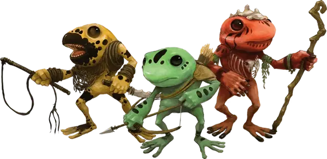

Грунг
Grung
Маленький Гуманоид, законно-злой

Класс Доспеха 12
Хиты 11 (2к6 + 4)
Скорость 25 футов, лазая 25 футов
| мод | спас | ||
|---|---|---|---|
| СИЛ | 7 | −2 | −2 |
| ЛОВ | 14 | +2 | +4 |
| ТЕЛ | 15 | +2 | +2 |
| мод | спас | ||
|---|---|---|---|
| ИНТ | 10 | +0 | +0 |
| МДР | 11 | +0 | +0 |
| ХАР | 10 | +0 | +0 |
Навыки Атлетика +2, Восприятие +2, Выживание +2, Скрытность +4
Иммунитет к урону яд
Иммунитет к состояниям отравление
Чувства пассивное Восприятие 12
Языки Язык Грунгов
Опасность 1/4 (50 опыта)
Бонус мастерства +2
Среда обитания Лес
Особенности
Амфибия. Грунг может дышать и на воздухе и под водой.
Ядовитая кожа. . Любое существо, которое берет грунга в захват или как–то ещё входит в прямой контакт с его кожей, должно преуспеть в спасброске Телосложения Сл 12 или стать отравленным на 1 минуту. Отравленное существо, которое не находится в прямом контакте с грунгом, может повторять спасбросок в конце каждого своего хода, оканчивая на себе эффект при успехе.
Прыжок с места. . Грунг прыгает в длину на расстояние до 25 футов и в высоту до 15, с разбега или без.
Вариант: яд грунга. Существо, отравленное грунгом, страдает от дополнительного эффекта в зависимости от цвета грунга. Эффект длится до окончания действия яда грунга.
Зеленый. Отравленное существо не может двигаться, а только карабкаться или прыгать без разбега, с места. Если существо летает, то оно не может совершать действия или реакции пока не приземлится.
Золотой. Отравленное существо становится очарованным и получает возможность говорить на языке Грунгов.
Красный. Отравленное существо должно использовать действие, чтобы съесть еду, если она есть в пределах досягаемости.
Оранжевый. Отравленное существо становится испуганным своими союзниками.
Синий. Отравленное существо громко кричит или издает громкие звуки в начале и конце своего хода.
Фиолетовый. Отравленное существо испытывает отчаянную жажду покрыть себя жидкостью или грязью. Оно не может совершать реакции или двигаться как–то кроме того чтобы пытаться покрыть себя жидкостью или грязью.
Действия
Кинжал. . Рукопашная или Дальнобойная атака оружием: +4 к попаданию, досягаемость 5 футов или дистанция 20/60 футов, одна цель. Попадание: 4 (1к4+2) колющего урона и цель должна преуспеть в спасброске Телосложения Сл 12 или получить 5 (2к4) урона ядом.
Описание
Грунги – это агрессивные жабоподобные гуманоиды, которых можно встретиться в дождливых лесах и тропических джунглях. Они яростно защищают территорию и мнят себя превосходящими остальных существ.
Проживающие на деревьях амфибии. Грунги живут в деревьях и предпочитают тень. Инкубатор грунгов хорошо охраняется и находится в прудах на уровне земли. Спустя примерно три месяца после вылупления головастик грунга принимает форму взрослого. Еще от шести до девяти месяцев занимает у юного грунга процесс взросления.
Касты и цвета. Общество грунгов основано на системе каст. Каждая каста откладывает яйца в отдельный пруд инкубатор и юные грунги присоединяются к своей касте после появления из инкубатора. Все грунги тускло–зелено–серые при рождении, но каждый индивид принимает цвет своей касты пока взрослеет.
Зеленые грунги – это воины, охотники и рабочие племени, а синие работают ремесленниками и занимаются домашними делами. Надзирают и направляют обе группы фиолетовые грунги, которые служат администраторами и командирами. (Используйте блок характеристик грунга для зеленой, синей и фиолетовой каст.)
Красные грунги – это ученые племени, использующие магию. Они стоят выше фиолетовых, синих и зеленых грунгов и им отдают уважение даже грунги более высокого статуса. (Используйте блок характеристик дикого грунга для членов красной касты.
Высшие касты включают в себя оранжевых грунгов, элитных воинов, которые имеют власть над всеми меньшими грунгами, и золотых грунгов, которые занимают высшие лидерские позиции. Правителем племени всегда является золотой грунг. (Используйте блок характеристик элитного воина грунгов для членов оранжевой и золотой каст.)
Грунг обычно остается в своей касте на всю жизнь. В редких случаях, индивид, который отличился великими свершениями, может заработать приглашение на вступление в более высокую касту. Посредством смеси тонизирующих трав и ритуальной магии, возвышающийся грунг меняет цвет и принимается в новую касту так же как и любой юный грунг. С этого момента, грунг и его потомство являются членами более высокой касты.
Ядовитые от природы. Все грунги выделяют субстанцию, которая безвредна для них, но ядовита для других существ. Грунги используют яд для отравления своего оружия.
Работорговцы. Грунги всегда выискивают существ, которых можно схватить и сделать рабами. Грунги используют рабов для любых типов работ слуг, но в основном они просто любят ими помыкать. Рабов кормят слегка отравленной едой, чтобы они оставались апатичными и податливыми. Существо, подверженное этому в течение долгого периода времени, становится лишь оболочкой прежнего себя и может вернуться в нормальное состояние только посредством магии.
Зависимость от воды. Грунг, который не погрузился в воду хотя бы на 1 час в течение дня, получает один уровень истощения в конце этого дня. Грунг может избавиться от этого истощения только магией или погрузив себя в воду по крайней мере на 1 час.
См. дополнительно статью: "Бестиарий: Грунги"